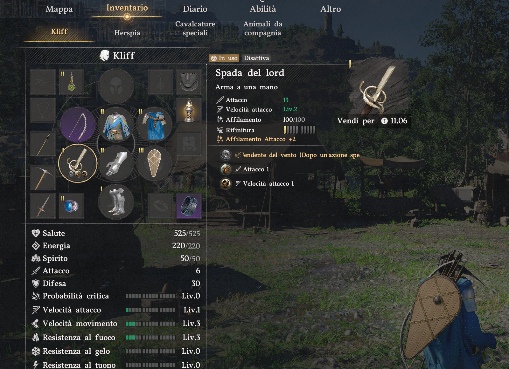

Galleria
Dieci immagini dalla save di Re Kliff.
Click per ingrandire, frecce per scorrere.

L'accampamentoLa Collina Ululante dopo che Kliff l'ha rimessa in piedi.

Il diario delle questCinque capitoli chiusi, il sesto al 90%.

La scheda di Re KliffStats, armatura, equipaggiamento completo.

La Spada del LordAtk 15, affilata cento su cento.

Le tre mongolfiereFast-travel aereo, blu e oro.

I 12 CinghialiTutti reclutati. Tutti incarichi chiusi.

Il libro delle taglie7/9 fuorilegge della Casata Celeste a terra.

Il tesoro1.000 silver in banca, profilo Proattivo.

La mappa48/110 regioni note, il 79% del mondo non aperto.

HerspiaFiducia Liv 5. L'unica relazione stabile.